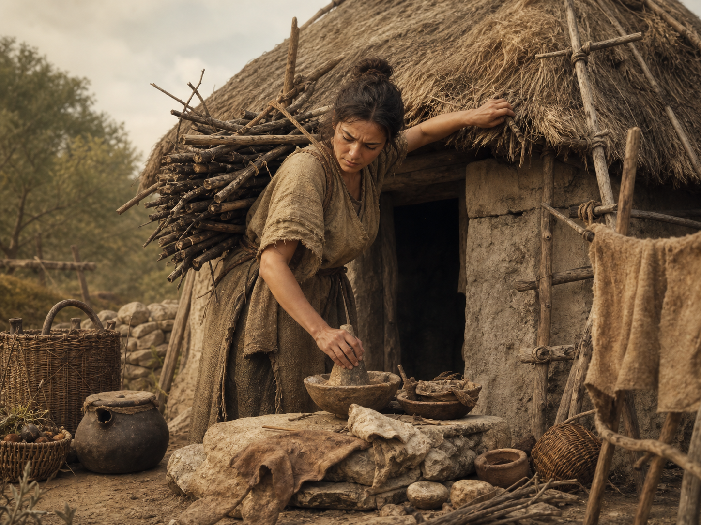
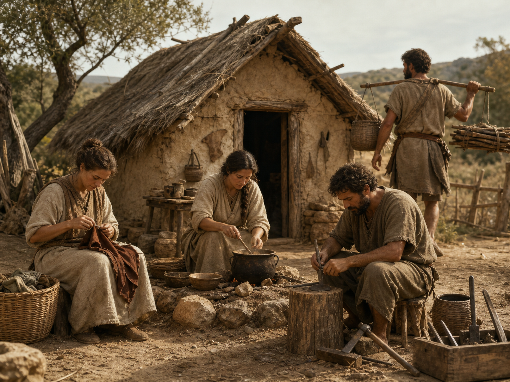
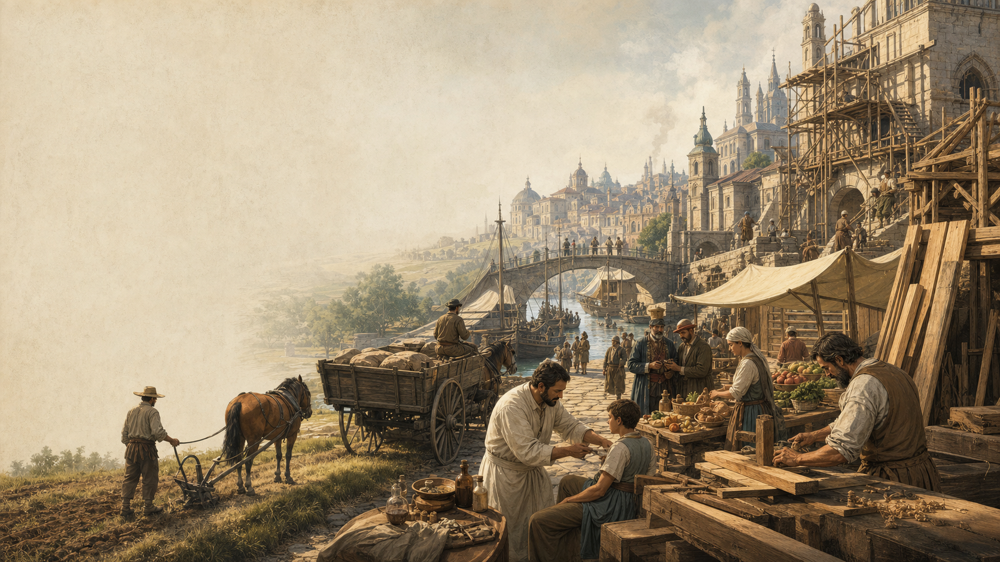

เราต้องจัดหาปัจจัยดำรงชีพทุกอย่างเอง ทำทุกอย่างเองแต่ขาดประสิทธิภาพ

ความร่วมมือจำกัดแค่ในกลุ่มเล็กๆ
คนกลุ่มเล็กๆ อย่างครอบครัวหรือชนเผ่าสามารถจัดสรรหน้าที่และแบ่งปันทรัพยากรกันได้โดยไม่ต้องซื้อขายแลกเปลี่ยน แต่การสร้างความร่วมมืออย่างสันติในวงกว้างกับคนแปลกหน้าต้องอาศัยการแลกเปลี่ยน


เมื่อมีการแลกเปลี่ยน แต่ละคนก็สามารถเลือกทำสิ่งที่ตัวเองถนัด
พัฒนาความเชี่ยวชาญ ยึดเป็นอาชีพ ทำแค่เรื่องเดียว
แต่แลกผลผลิตของตัวเองกับผลผลิตของคนอื่นๆ ได้